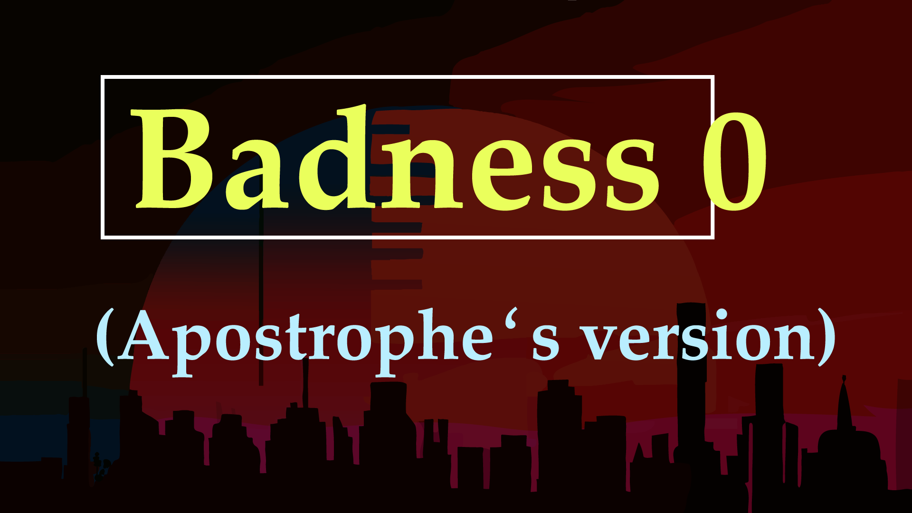

Ways one and two: Read Knuth's Version nand Epsom's Version. They appear in the extremely discerning proceedings of SIGBOVIK 2024. Some software still seems to have trouble opening them, but they work in Chrome (recommended) and Firefox now.
Way three (recommended) is to sit back and bathe in the 4k, 60Hz flashing lights that are Badness 0 (Apostrophe‛s version) is the newest installment in the Main Sequence:
If you just love suffering, like if nothing is more satisfying to you than fighting through an error message, way four is to download and try to compile the source code. I will try to make some notes on compiling and using this after recovering a bit from video-making. The source code is available under the GPL (COPYING) or GJPL (JCOPYING).
One font I made, which is seen in the video and document: FixederSys.
Of course, there are multiple irksome videos on my YouTube channel
Suckerpinch!

Please leave a comment on my blog or on Mastodon at @tom7!
Get all Tom 7 thingos at → [tom7.org]